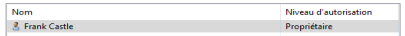

Turn on VMs :
- Windows Server 2016
- Windows 10 Enterprise
Windows 10 Enterprise
(1) Create and share a Scans folder on Windows 10 Enterprise :- - CMD :
- - mkdir C:\Scans
- - File explorer :
- Right Click on C:\Scans > Properties > Sharing > Share
- Frank Castle : Owner => Share- 
- => Enter Admin credentials

(2) Make the user a local admin :
- Run CMD as an administrator (admin credentials) 
- - compmgmt.msc

- - Computer management (local) > Local users and groups > Groups > Administrators

- - Add fcatsle + Check names

- => OK

=> Reboot
(3) Connect as Other user > Administrator (admin creds) :

(4) Turn off Windows Defender : - - Paramètres > Mise à jour et sécurité > Sécurité Windows > Protection contre les virus et menaces
- - Paramètres de protection contre les virus et menaces > Gérer les paramètres
- - Protection en temps-réel : off

(5) Turn off Windows Defender Firewall :- - Paramètres > Mise à jour et sécurité > Sécurité Windows > Pare-feu et protection réseau
- - Réseau avec domaine : deactivate
-
(6) Get IP :
- CMD > ipconfig